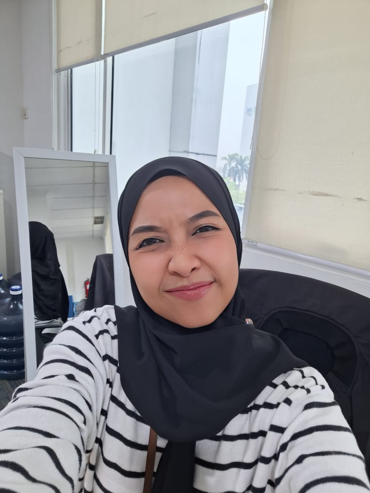

Dengan ini,
Chapter 42
resmi ditutup.
Hari ini adalah harimu
Astri Fitriani

Hai Astri...
Di hari yang spesial ini, gue sengaja membuat halaman web ini khusus untukmu. Ini adalah tempat kecil di internet di mana gue mengumpulkan serpihan ingatan, tawa, dan semua momen indah yang sudah kita lalui bersama.
Karena setiap lembar halaman baru dalam hidup, selalu ada halaman sebelumnya yang memberikan kita arti, arah, dan keberanian untuk terus menuliskan lembar halaman berikutnya.
Terima kasih sudah lahir ke dunia dan melengkapi hidup ini yaa.
Beberapa babak cerita yang paling berkesan dalam perjalanan kita.


Setelah sudah 2 tahun lamanya kita lost contact, akhirnya kita membuka komunikasi kembali. Diawali dengan chat dari lu yang ingin mengucapkan selamat ketika gue promosi jadi Manager. Hal itu berujung pada pertemuan kita ini di Starbuck untuk "reconnect" kembali


Momen sedih waktu itu karena kita terpaksa "terpisah" oleh tempat. Lu dan mba Romana harus pindah ke Tubun dan gue di Centennial.Walaupun begitu, selalu ada cara untuk kita bisa komunikasi lagi.


Diawali dengan kita bertiga dengan mba Romana, kemudian ditambah Akbar dan disusul mba Riya. Kita membuat group perkumpulan untuk bisa saling terkoneksi satu sama lain. Yang awal niatnya hanya menjadi alasan untuk kita bisa bersama, menjadi keluarga yang tidak tergantikan.


Pergantian suasana ekstrim yang sedang terjadi saat ini. Saking ekstrimnya, memaksa kita untuk adjust cara kita berinteraksi. Tetapi ini tidak menjadi penghalang kita untuk bisa saling peduli satu sama lain yaaa
Foto random yang berkesan dalam melengkapi cerita hari hari kita

November 2024
Foto pertama kali gue tau lu udah pakai kacamata di daily activity, kelihatan banget pintar nya

April 2025
Di candid sama orang rumah, gambaran Astri kalau kerja dirumah, sudah pasti ngerjain materi radisi iniiii

Agustus 2025
Waktu itu gue nggak masuk kerja karena sakit, cuma lagi pengen banget ngelihat lu, jadi gue request buat minta selfie, makasih yaa

Januari 2026
Biasa nemenin lu pas lagi persiapan materi radisi di sebelah, dapet pesan dari mba Romana untuk mastiin lu udah makan, akhirnya kirim bukti foto ini deeeh

Juni 2026
Foto jalan-jalan di Bandung, foto yang paling stuck di kepala gue, raut wajah dan angle foto nya perfect !!
Daftar rasa favorit yang selalu sukses memanjakan lidah dan hatimu.


Aku selalu bangga melihat proses dan kerja kerasmu selama ini.

Walaupun berangkat kesana bukanlah sebuah keinginan melainkan tugas dinas, tetapi bisa experience berangkat ke negara lain merupakan salah satu pencapaian yang belum tentu bisa dirasakan banyak orang. Sayangnya gue nggak bisa ikut kesana hahaha

Gue kaget dan terkagum-kagum kalau ternyata lu punya kemampuan untuk membuat design gambar. Hasil dari gambar itu pun juga sudah terealisasi, dibangun sesuai dengan apa yang diharapkan. Mungkin buat lu biasa tapi buat gue ini keren banget !!!

Keinginan lu selama ini untuk bisa lebih mandiri dalam hal transportasi akhirnya bisa terwujud. Modal keinginan, niat, dan kegigihan yang kuat.Lu belajar untuk bisa jalan-jalan bareng ibu dan anak-anak semau lu. Gue bangga banget sama lu Tri

Setelah sekian purnama ujian tertunda terus, akhirnya usaha belajar soal-soal untuk ngerjain ujian ini terbayarkan juga. Tidak sia-sia begadang malam-malam setelah pulang lembur kerja supaya bisa ngerjain soal ujian ini di HARI SABTU PULA. Salut deh sama lu Tri...

Keinginan yang sudah direncanakan sejak lama, akhirnya tercapai juga walaupun dengan kondisi personilnya belum lengkap ya. Semoga nanti kita semua bisa berkumpul dan berlibur bersama...

Terlalu banyak kalau di sebutin satu satu, dari menyelesaikan issue backlog klaim, document scanning, main person materi radisi, membawahi 2 unit, sampai ke mensejahterakan tim. Semua sudah lengkap, menunjukan kapabilitas maksimal seorang leader dan seorang achiever, you should be proud...
Menjadi ibu yang baik untuk keluarga.


Dari semua hal hebat yang sudah dicapai, bagi gue pencapaian terbesar lu adalah bagaimana lu berhasil selalu ada di momen-momen penting keluarga lu, menyempatkan waktu lu untuk bisa terus support keluarga, dan menjadi contoh yang baik untuk keluarga.
Kamu luar biasa hebat Astri... Keluarga lu beruntung punya sosok perempuan seperti mu...
Sebelum Chapter 42-mu ini ditutup, Izinkan gue untuk mengucapkan rasa terima kasih yang mewakili seluruh insan, yang mungkin belum sempat terucap langsung
Terima kasih sudah menjadi leader yang baik, pintar, solutif, dermawan, dan empati untuk Timmu di BNI Life.
Terima kasih sudah menjadi team member yang sabar, gigih, dan tenang menghadapi tuntutan yang diberikan Atasanmu di BNI Life.
Terima kasih sudah menjadi teman yang baik untuk seluruh anggota group DIETnya BESOK AJA..!!!.
Terima kasih sudah menjadi Ibu yang baik, pengertian, penuh kasih sayang, dan penuh cinta untuk Keluarga.
Di luar peranmu untuk tim, teman-teman, dan keluarga, gue mau berterima kasih atas semua momen berharga yang kita share bersama.

Makasih ya udah selalu meluangkan waktu di tengah semua kesibukanmu, untuk bisa bertemu dan berinteraksi denganku.
Di momen-momen yang normalnya sulit untuk kita realisasikan, memanfaatkan agenda-agenda yang ada

Makasih udah selalu memberikan perhatian kepadaku,entah itu soal kesehatan, emosi, dan sampai hal-hal kecil pun.
Sudah mau repot repot membelikanku obat ketika diriku sakit.

Makasih udah selalu sabar ngadepin semua sifatku, egoku, dan juga overthinkkingku.
Sabar untuk tetap memberikan kabar, walaupun situasinya sepadet ini pun di kereta hanya untuk memenuhi permintaanku.

Makasih sudah selalu memberikan semangat, memancarkan aura positif di dirku yang sangat negatif ini, memotivasi diriku untuk bisa terus maju.
Seperti waktu itu menyemangatiku untuk belajar membuat masakan rumahan, walaupun masih gagal hahaha

Makasih sudah mendukung diriku terutama di dunia kerja, membantu mempermudah urusan administrasi dikantor.
Menyediakan ruangan khusus untuk diriku dan tim ketika ke PIK, dan untuk voucher Taxi

Makasih sudah menjadi dirimu...
Wanita yang ku cinta dan puja...
Wanita pintar dan elegan...
Wanita yang memiliki empati yang sangat tinggi...
Wanita yang kuat menghadapi segala rintangan yang datang kedirinya...
Wanita terbaik yang pernah aku temui..
Dengan ini berakhirlah sudah chapter kehidupanmu di 42, saatnya menyambut chapter 43 dengan hati yang lebih tangguh, senyuman yang lebih cerah, dan sejuta harapan baru. Terima kasih sudah berjalan dan berjuang sejauh ini Tri.
resmi ditutup.
Selamat menempuh Chapter 43 dengan penuh bahagia...
Ada satu surat dan kejutan terakhir yang sengaja gue simpan di dalam amplop ini. Klik untuk membuka ya.
Selamat tanggal lahir Astri Fitriani.
Melalui surat kecil digital ini, gue cuma mau billing kalau gue bersyukur banget atas kehadiran lu di hidup ini.
Semoga di usia yang baru ini, lu selalu diberikan kesehatan, kebahagiaan yang melimpah, dan ketenangan hati dalam setiap langkah.
Setiap mimpi atau target yang lagi lu kejar, doa gue selalu menyertai.
Dan Apapun yang terjadi di depan nanti, ingat ya kalau lu selalu punya gue yang siap mendukungmu.
Happy 43rd Birthday,
Astri Fitriani.
Tetap jadi diri lu yang luar biasa ya! 🤍
Klik kado ini untuk membukanya
Semoga suka dengan video ucapan sederhana yang aku buat ini ya...
With love ❤
from
Dafi Luanda
Sedikit cerita di balik layar proses pembuatan website ini...